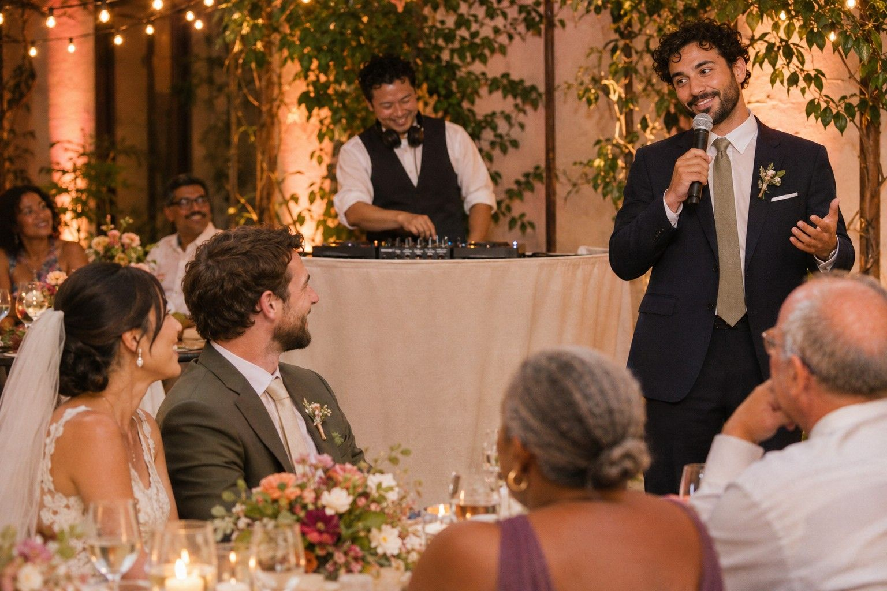
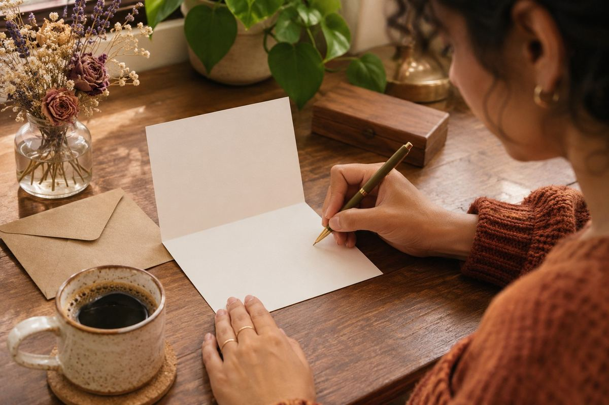
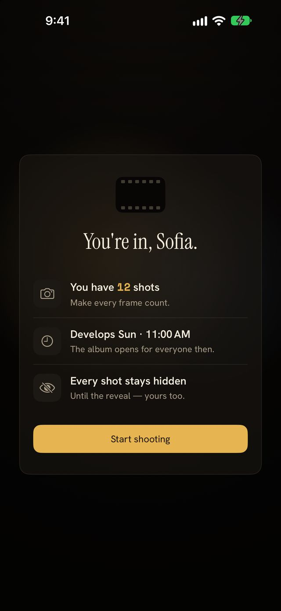

How to Ask Wedding Guests to Share Photos: 12 Scripts
Copy-paste wording for every touchpoint, plus the timing that keeps it from nagging.

Short answer: Ask wedding guests to share photos at three moments: before the day (one line on your website and invitation insert), during it (a QR code on every table and a 20-second announcement), and once afterward (a text within 48 hours). Give guests one link, tell them when they’ll see the album, and stop after one reminder.
Guests are usually glad to share their photos. They just need to be asked at the right moment, with one obvious place to put them. Below is copy-paste wording for every touchpoint, from the wedding website to the thank-you card, plus the timing and etiquette that keep it from turning into nagging. Sam and Priya are placeholder names; swap in your own.
How to ask wedding guests to share photos without nagging
Every good ask follows the same five rules:
- One place, one link. Pick a single destination for every photo. Offering a shared album, an upload folder and a hashtag at once means people pick none of them.
- Ask for their view, not their labor. “You’ll see moments we miss” lands better than “please upload your photos.” Guests aren’t your second photographer; they’re the people at table 9.
- Make it one tap. A QR code that opens a page in the browser, with no sign-in, beats any instruction you can write.
- Say what happens next. “You’ll all see the album Sunday morning” gives people a reason to come back.
- Ask after, once. One message within 48 hours, one gentle reminder about a week later, then let it go.
If you haven’t chosen the place yet, start with our side-by-side guide to ways to collect photos from wedding guests. Everything below works with any of them.
| Touchpoint | When | Length |
|---|---|---|
| Wedding website FAQ | As soon as the site is live | 3–4 sentences |
| Invitation insert or RSVP card | With the invitations | 1 line |
| Welcome sign and table cards | The day | Headline + 2 lines |
| MC or DJ announcement | After dinner, before dancing | About 20 seconds |
| Morning-after text | Within 48 hours | 2–3 sentences |
| One-week follow-up email | About 7 days after | 4–5 sentences |
| Thank-you card line | With your thank-you notes | 1 line |
| Sharing the album back | When the album is ready | 2 sentences + link |
Before the wedding: website, invitation and RSVP wording
The early ask doesn’t collect anything. It sets the expectation, so that when guests see the QR code on the day, they already know what it’s for.
Wedding website FAQ entry
If your wedding website has an FAQ page, “Can we take photos?” belongs on it. Answer the unplugged question and the sharing question together:
Can we take photos?
Please! We’re having an unplugged ceremony, so we’d love phones away during the vows; our photographer has that part covered. From cocktail hour on, shoot as much as you like. There’s a QR code on every table: scan it with your phone camera to add your photos to our shared album. We’ll share the whole album with everyone the morning after.
Not unplugged? Replace the second and third sentences with “Shoot as much as you like, all day.”
Invitation insert or details card
Keep the invitation itself for the essentials and put this on a details card or the back of the RSVP card:
Bring your phone and your best angles. There’ll be a QR code on every table for sharing your photos, and we can’t wait to see the day through your eyes.
RSVP card line (optional, playful)
Will you be our second shooter? ☐ Obviously ☐ Only if there’s cake
A heads-up to your wedding party
Ask three to five friends to share the first photos during cocktail hour, so the album isn’t empty when everyone else arrives. One of them can be your photo captain: the person who points to the QR code and helps anyone who gets stuck.
Hey Jess, would you be our photo captain on Saturday? Two small jobs: remind your table about the QR code during dinner, and help anyone who can’t get it to open. That’s it. Thank you!
On the day: signs, table cards and the announcement
This is where photos actually get collected, because it’s when the phones are out. Two channels work together: something to read, and someone to say it out loud.
Welcome sign
Our photographer has the vows. You have everything else.
Scan with your phone camera to share your photos. The album opens Sunday at 10 a.m.
Table card
Got a great shot? Scan here to add it to our album. Everyone sees the photos tomorrow morning.
For 45 more lines grouped by tone, plus QR sizes and how many signs to print, see our wedding QR code sign wording guide.
The officiant’s unplugged line
If your ceremony is unplugged, Offbeat Wed’s unplugged-wedding guide says the easiest approach is a brief announcement from your officiant before the ceremony starts. Add one sentence that points to later:
Sam and Priya invite you to be fully present for the next 20 minutes, so please put your phones away. Their photographer has this part covered. Once the party starts, phones are very welcome: you’ll find a QR code for sharing photos on every table.
The 20-second MC or DJ announcement
Best moment: right after dinner, before the dance floor opens, when people are seated and phones are on the table. Give your DJ or best man this script:
Quick favor from Sam and Priya. There’s a QR code on every table. Scan it with your phone camera and every photo you take tonight lands in one shared album. Dance floor, bar, the moment someone’s uncle loses his tie: they want it all. You’ll see the photos tomorrow at 10 a.m.
That’s about 50 words. Read it aloud with a timer before the day; at an easy pace it should land near 20 seconds. If the timeline is tight, the short version is: “There’s a QR code on your table. Scan it, shoot all night, and you’ll see everyone’s photos tomorrow.”
Ask for a second, shorter mention late in the night, when the dance floor is at its best. That’s when the photos you’ll treasure most are being taken, and when people have forgotten the first announcement.
After the wedding: the morning-after text and one follow-up
The day after is your best window. People are still scrolling through last night, and the photos are on top of their camera roll. Send the first message within 48 hours, ideally mid-morning rather than at 7 a.m. after a late party.
Morning-after text
Good morning! Thank you for celebrating with us yesterday. If you took any photos, we’d love them here: [link]. Even the blurry ones. Especially the blurry ones. Love, Sam & Priya
Send it from your own phone to your group thread or as individual texts, not from a no-reply service. Guests answer people, not systems.
One-week follow-up email
Subject: One last favor (and the photos)
Hi everyone, we’re still smiling about last Saturday. If any photos are hiding in your camera roll, here’s the link to add them: [link]. We’ll close the album on [date] and share the finished collection with all of you. Thank you for being there. Sam & Priya
That’s the last reminder. A closing date gives people a reason to do it now, and after that, let it go. Anyone who still hasn’t shared either has nothing to share or doesn’t want to, and both are fine.
Thank-you card line
The Emily Post Institute says wedding thank-you notes should be written within three months of receiving the gift, so don’t hold them back waiting for photos. Thank them for the gift first, then add one line:
P.S. If you have any photos from the day, we’d love to see them: [short link].
If someone already shared, thank them for a specific photo instead. “That shot of Grandma on the dance floor is on our fridge” is worth more than any request.

How to share wedding photos with guests afterward
The quickest way to get more photos is to share some first. Offbeat Wed suggests getting a small set of images to guests within a couple of days of the wedding, by Monday or Tuesday after a Saturday wedding. Ask your photographer whether a few sneak peeks are possible, and send the guest album back to everyone who was there.
The photos are in! [link] Thank you for every angle we never saw. Save your favorites; the album stays open until [date].
A few rules for the album you send back:
- Keep it private. Share the link with guests, not on a public profile, and say so in your message so nobody worries about where their photos end up.
- Ask before posting others. Before you post a guest’s photo, especially one with other people’s children in it, ask.
- Say how long it stays up. If the album expires, say so in the message so guests save their favorites in time.
- Credit the guest. When you post a guest’s shot, tag them. It’s the cheapest thank-you there is.
Wedding photo etiquette: what not to do
- Don’t ask in the group chat for “all your photos.” Chat apps can shrink photos (in WhatsApp, Standard quality cuts an iPhone photo to 960 × 1280 pixels unless the sender picks HD), and the thread buries them within a day. Our guide to the best way to share photos with a group covers why.
- Don’t override your own unplugged ceremony. If the vows are phone-free, the QR code belongs at the reception, not on the ceremony programs.
- Don’t make anyone feel graded. Never imply that guests owe you photos, or comment on who didn’t share.
- Don’t send three reminders. One follow-up is a nudge. Three is a campaign.
- Don’t ask people to download several things. Every extra step (an app, an account, a password) is a place where someone gives up, especially your less techy relatives.
How to make sharing a one-tap action
The best wording in the world can’t rescue a link that asks for a sign-in. Before the day, check the whole path from a guest’s point of view:
- Guests don’t need a scanner app: iPhones read QR codes from the Camera app, and most Android phones read them from the camera app or Google Lens.
- The code should open a page in the browser with no login wall, on both iPhone and Android. Test with a friend’s phone that has never visited the page.
- Put the code where people sit, not only at the entrance. Our step-by-step guide to a QR code for wedding photos covers sizing and testing.
- Print a short backup link or code under it for anyone whose camera won’t cooperate.
The one-tap version of “share your photos later” is not having a “later” at all. If guests shoot into one shared place during the party, the photos are already collected by the time anyone goes home.
Asking with Filmsera: skip the morning-after chase
Filmsera is built around that idea. You create a film for the wedding in the iPhone app and pick when it develops. The “Tonight”, “Tomorrow” and “In 3 days” presets all develop at 9 p.m., so for a 10 a.m. reveal the morning after, like the one in the text below, choose “Custom” and set the time. Guests scan the QR code on the table, type a name and shoot from their own phones. Every photo goes straight into the same roll, so there’s no upload step and no morning-after chase.

Guests can join and shoot from their phone’s browser, with no app or account, or in the free Filmsera app on iPhone. Photos stay sealed until the reveal, so nobody, including you, sees a frame early. At the reveal time, the whole film appears at once for everyone in it, each photo tagged with who took it. In the iPhone app, a Live Activity counts down to it. Your morning-after text changes from a request into an invitation:
Good morning! The wedding film develops at 10 a.m. Open the link to see every photo from last night, tagged with who took it: [link]

Honest limits, as of November 2026: the host needs an iPhone (iOS 17 or later), browser guests take photos only (video clips need the app and a Celebration or Wedding film), and photos in a free film stay on Filmsera’s servers for 30 days after the reveal, so save the ones you want to keep. Pick the develop time with care; our guide to choosing the right reveal time helps. More on how it runs at a reception is on our Filmsera for weddings page.
With Filmsera, guests shoot into one shared wedding film from the QR code on their table, and everyone opens the whole roll together at the reveal. Get Filmsera on the App Store
FAQ
How do you ask guests to send wedding photos without being pushy?
Ask for their view rather than their effort (“you’ll see moments we miss”), give one link that opens without a sign-in, and say when everyone will see the album. Send one message within 48 hours of the wedding and at most one reminder about a week later. After that, let it go and thank the people who did share.
What should I put on my wedding website about photos?
Add an FAQ entry that answers two things at once: whether phones are welcome during the ceremony, and how to share photos at the reception. Mention the QR code on the tables and when you’ll share the album back. Three or four friendly sentences are enough; save the link itself for the day, when guests actually have photos to add.
When should you text guests for wedding photos?
Within 48 hours, ideally the morning after, mid-morning rather than early. The photos are still at the top of everyone’s camera roll and the night is fresh. Send one follow-up email about a week later with a closing date for the album, and stop there.
Is it rude to ask wedding guests for their photos?
No. Plenty of guests take photos anyway and are glad to see them used. It only becomes awkward when the ask is repeated, when guests feel they’re doing the photographer’s job, or when their photos end up somewhere public without warning. Keep the album private and say so.
Should I put photo-sharing details on the wedding invitation?
Keep the invitation itself for the essentials, and put one line about photos on a details card, the back of the RSVP card or your wedding website. The full instructions and the QR code belong on the day-of signs, because invitations arrive weeks ahead and usually stay at home.
Written by the Filmsera team
Filmsera is a shared disposable camera app for iPhone: create a film for your event, let guests join by QR code from the app or their phone's browser, and open the whole roll together at the reveal. Download on the App Store →
Photos in this article are illustrations created for Filmsera, not customer photos. App screenshots are from Filmsera on iPhone.